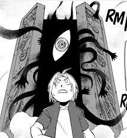
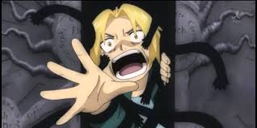

FullMetal Alchemist: Brotherhood is widely regarded as one of, if not the best anime ever created. The quality of the animation,
the nearly flawless plot, and endlessly interesting cast of diverse characters lead the way, but what stands out is how the story
weaves in imagery that elevates climactic moments and draws on deep philosophical concepts for the conversations the show encourages you to have
either with yourself or others.


Above, there’s a young boy seemingly scrambling in fear away from this gate behind him. To give some context, in this world,
alchemy is considered a science, which happens to be almost magical in nature, but alchemy and natural law are both bound by “equivalent exchange”,
to obtain something, something of equal value must be relinquished. Our subject, Edward, ended up here trying to resurrect his mother using alchemy,
which is considered taboo, not to mention impossible, for what could possibly be equivalent to a human soul?
From these images, you can gather that whatever Edward is running from makes him feel tiny and defenseless like the child he truly is, despite his usual prideful
and boisterous nature seen throughout the rest of the show. The gate is humongous and imposing compared to his already diminutive stature, and the black childlike hand tendrils
dragging him to his fate seem otherworldly, even in the face of alchemy. Furthermore, the gate also has the sefirothic tree of life engraved on the front,
which is a direct reference to Judaism. The beauty of this scene lies in its rewatch value. You won’t understand the real significance of this scene if you don't rewatch this episode
after finishing most of the series, since the mystery of Edward, the gate, and his situation are presented in the first few episodes, but unraveled throughout the series.
Given this context though, it is clear that the science of alchemy that governs Edward’s world is more tied into religion than their behavior would glean,
and only those heavily inundated with Judiastic theology would notice that on their first watch of this scene.